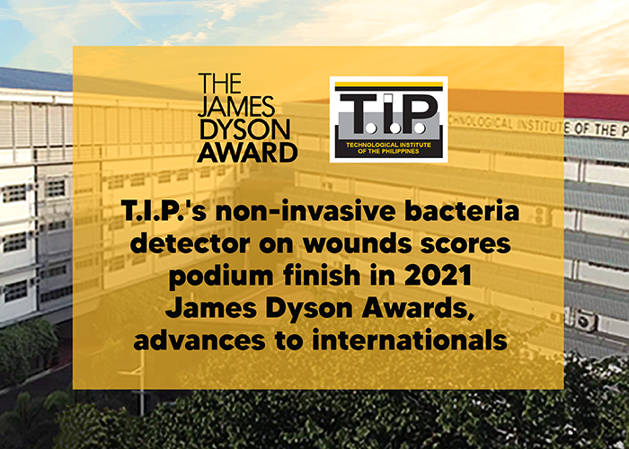

T.I.P.'s non-invasive bacteria detector on wounds scores podium finish in 2021 James Dyson Awards, advances to internationals

The Technological Institute of the Philippines (T.I.P.) Manila assumed a podium spot in
the 2021 James Dyson Awards (JDA) with its non-invasive bacteria detector on wounds, an
electrochemical device that identifies microbes found in wounds and other topical cuts
through quick gas absorption.
Electronics engineering fresh graduates Angelica Moneth Lozano and Shania Xylene Miguel
worked on the medical instrument for over a year, competing with 33 more student entries
and eventually finishing runner-up in the JDA nationals.
"Our prototype gives immediate diagnosis of infectious and decaying wounds,
skipping long processes of laboratory sampling which is rather costly and painful," said Lozano.
"We've tested it on diabetic patients at Jose R. Reyes Memorial Medical Center;
and for results to be accurate, the device's sensors need to absorb the fumes
emitted by the wound from an ideal distance of one to four millimeters only.
Bacteria present will be shown through an LCD screen in less than five seconds," she added.
The goal, according to Lozano, was to make healthcare accessible to all,
especially in a time of crisis.
Dr. Rommel Anacan, head of T.I.P. Manila's Math and Physics department,
echoed this sentiment – noting that with its latest inventions and breakthroughs,
the institution aims to create a "culture of excellence and innovation."
T.I.P.'s non-invasive bacteria detector on wounds is now advancing to the
international JDA where it will go head-to-head with fellow podium finishers
of other countries.
The James Dyson Awards is an annual global competition that celebrates the
works of the brightest and youngest minds in design engineering.
For more information on T.I.P., please visit www.tip.edu.ph or T.I.P.'s official
social media accounts through @TIP1962official for Facebook, Twitter, and Instagram.